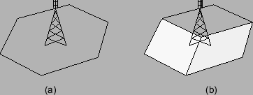
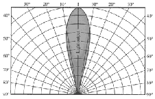

Siguiente: Fundamentos Teóricos
Subir: Conceptos preliminares
Anterior: El concepto celular
Índice General
La principal función de la radiobase es actuar como intermediario
entre los terminales móviles y la central móvil celular. Es la encargada
de manejar la interfaz de radio para la comunicación con los terminales móviles en
el acceso inalámbrico. Está constituida por varias unidades de
canal, consistentes cada una por un transmisor y receptor de radio y
por el sistema radiante (sistema de antenas).
Cada radiobase se ubica en un determinado punto geográfico al que se
denomina sitio. La elección de los sitios no sólo depende de
aspectos de radiofrecuencia, sino de disponibilidad de espacio
físico, que puede implicar también cuestiones legales y/o
regulatorias. Por las necesidades de altura, las torres se
ubican generalmente sobre una edificación.
Una radiobase puede conformar una celda de uno o más sectores, en
este caso se denomina sectorizada (ver figura
2.2). Esta última variante es muy utilizada, sobre todo
en entornos urbanos. En lugar de una única antena omnidireccional
que sea capaz de cubrir los 360^o, se agrupan los equipos de
transmisión y recepción con antenas direccionales que cubren un
cierto ángulo. Con esto se logra disminuir la interferencia (debido
a que se reduce la zona de cobertura) y aumentar la ganancia (las
antenas direccionales concentran la potencia en una zona mucho más
pequeña que las omnidireccionales). Además, la alta relación
frente-espalda 2.1 de las
antenas direccionales permite mejorar la CIR del sistema, pudiéndose
reutilizar más grupos de frecuencia en la zona.
Figura 2.2:
Esquema de una radiobase (a) omnidireccional, (b) de tres
sectores
|

|
En resumen, la caracterización de las radiobases se hará mediante:
- el sitio al cual pertenece (coordenadas)
- la altura
- la cantidad y características de las antenas
Las antenas incluyen los siguientes parámetros de interés:
- Canal. El grupo de frecuencias asignado.
- Potencia radiada. La potencia de transmisión de la antena.
- Ganancia máxima. La ganancia de una antena se define como
la relación entre la densidad de potencia (intensidad de radiación)
en una dirección dada y la intensidad que sería obtenida si la
potencia aceptada por la antena fuera radiada
isotrópicamente2.2. La máxima ganancia corresponde a la ganancia en la
dirección de máxima intensidad de radiación; para el cálculo de la
ganancia en otra dirección se utiliza la información del patrón de
radiación.
- Patrón de radiación. Es una función matemática o una
representación gráfica de las propiedades de radiación en función de
las coordenadas espaciales. Lo que se suele hacer para facilitar la
medición e interpretación es un corte (horizontal y vertical) en el
diagrama de radiación en tres dimensiones para pasarlo a dos
dimensiones (ver figura 2.3).
Figura 2.3:
Ejemplo de patrón de radiación
|

|
- Tilt. Es el ángulo de inclinación vertical del lóbulo
principal en relación al plano horizontal (down-tilt cuando
se mide hacia abajo del mismo). Mediante el ajuste de este parámetro
es posible reducir el tamaño de las celdas, para lograr una
cobertura más específica de la zona y disminuir así las
interferencias, controlando más efectivamente el alcance de la
celda. Puede ser mecánico y/o eléctrico.
- Azimut. Se define como la orientación el lóbulo principal con respecto
al norte magnético.
Siguiente: Fundamentos Teóricos
Subir: Conceptos preliminares
Anterior: El concepto celular
Índice General
SAPO